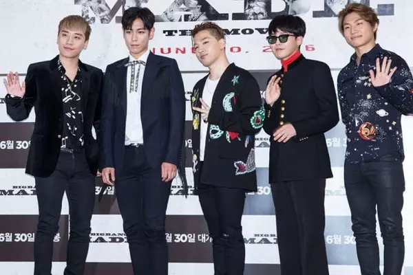
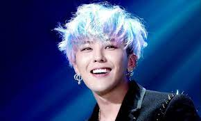
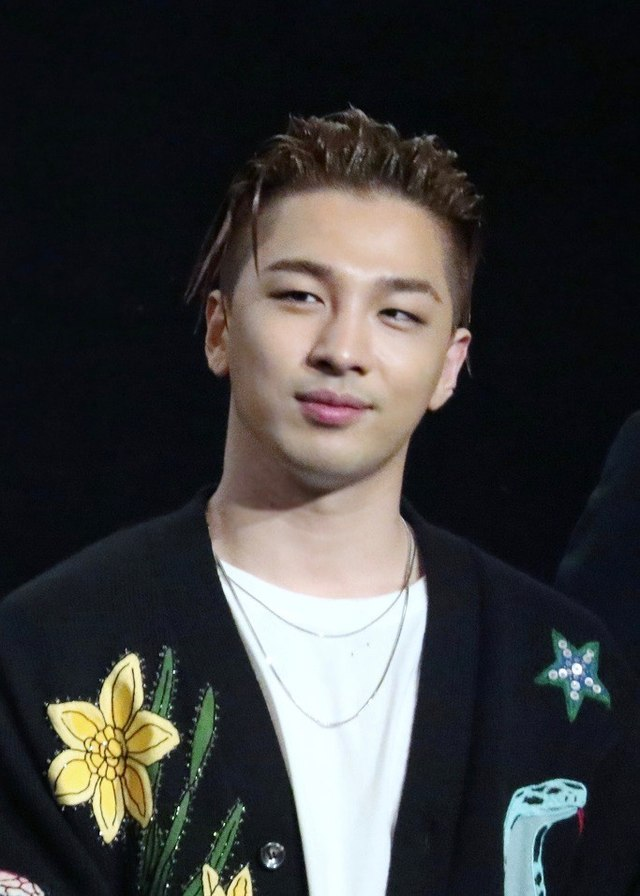
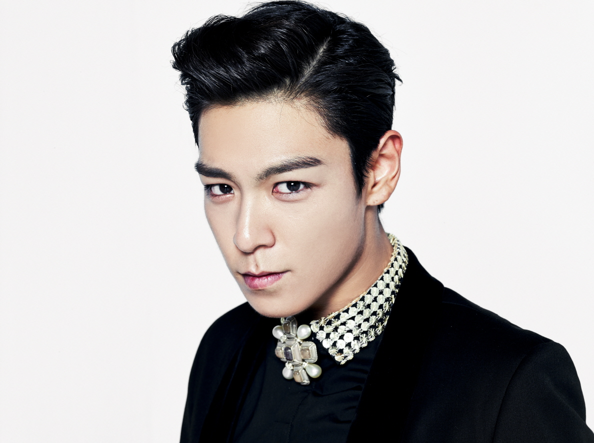
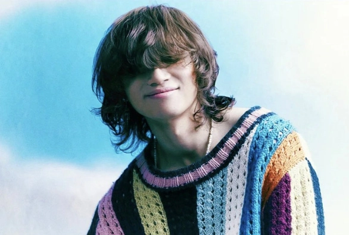
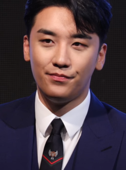

BigBang
Big Bang (Hàn: 빅뱅; Romaja: Big Baeng; cách điệu là BIGBANG), là một nhóm nhạc nam Hàn Quốc được thành lập bởi YG Entertainment, chính thức ra mắt năm 2006. Nhóm gồm 5 thành viên G-Dragon, T.O.P, Taeyang, Daesung và Seungri. Tuy nhiên ngày 11 tháng 3 năm 2019 Seungri rời khỏi ngành giải trí, ngày 5 tháng 4 năm 2022 T.O.P rời YG sau khi nhóm phát hành Still Life. Mặc dù vậy, anh vẫn sẵn sàng cho các hoạt động trong tương lai cùng Big Bang.
Kwon Ji-yong, thường được biết đến với nghệ danh G-Dragon, là một nam rapper, ca sĩ, nhạc sĩ và nhà sản xuất thu âm người Hàn Quốc. Anh được mệnh danh là "Ông hoàng K-pop"
Dong Young-bae (tiếng Hàn: 동영배; Hanja: 董詠培; Hán-Việt: Đổng Vịnh Bồi; sinh ngày 18 tháng 5 năm 1988),[2] thường được biết đến với nghệ danh Taeyang (tiếng Hàn: 태양; Hanja: 太陽; Hán-Việt: Thái Dương nghĩa là "mặt trời" trong tiếng Hàn) hoặc Sol (sử dụng ở Nhật Bản), là một nam ca sĩ, nhạc sĩ người Hàn Quốc. Taeyang bắt đầu thực tập tại YG Entertainment vào năm 12 tuổi. Sau sáu năm tập luyện, anh ra mắt với tư cách là thành viên nhóm nhạc nam Big Bang vào năm 2006
Choi Seung-hyun (tiếng Hàn: 최승현; Hanja: 崔胜賢; Hán-Việt: Thôi Thắng Huyễn; sinh ngày 4 tháng 11 năm 1987),[1] hay được biết đến với nghệ danh T.O.P, là một nam rapper, ca sĩ, nhạc sĩ, nhà sản xuất thu âm và diễn viên người Hàn Quốc, nổi tiếng với tư cách là thành viên của nhóm nhạc đến từ Hàn Quốc Big Bang
Kang Dae-sung (tiếng Hàn: 강대성; Hanja: 姜大聲; Hán-Việt: Khương Đại Thanh, sinh ngày 26 tháng 4 năm 1989)[1] hay còn được biết đến nhiều hơn với nghệ danh Daesung (hay D-Lite tại Nhật Bản), là một nam ca sĩ, diễn viên và người dẫn chương trình người Hàn Quốc. Anh cũng là thành viên của nhóm nhạc nam năm người đến từ Hàn Quốc Big Bang. Từ khi chính thức ra mắt, anh đã phát hành nhiều single solo, biểu diễn nhạc kịch, và tham gia trong show truyền hình thực tế Family Outing.
Lee Seung-hyun (tiếng Hàn: 이승현; Hanja: 李升炫; Hán-Việt: Lý Thăng Hiền, sinh ngày 12 tháng 12 năm 1990) hay còn được biết đến với nghệ danh Seungri (tiếng Hàn: 승리, Hán Việt: Thắng Lợi) hay V.I (viết tắt của "VICTORY" khi hoạt động tại Nhật), là một cựu nam ca sĩ, nhạc sĩ, diễn viên, nhà sản xuất âm nhạc và doanh nhân người Hàn Quốc. Anh ra mắt lần đầu vào ngày 19 tháng 8 năm 2006 dưới sự quản lý của YG Entertainment cùng nhóm nhạc Hàn Quốc Big Bang, một trong các nhóm nhạc có lượng nhạc số bán chạy nhất mọi thời đại tại Châu Á cũng như trên toàn thế giới [1]. Với bài hát solo đầu tiên "Strong Baby" thuộc album phòng thu thứ hai Remember (2008) của nhóm, Seungri, vốn được biết đến như thành viên nhỏ tuổi nhất của Big Bang, lột xác với hình ảnh trưởng thành nam tính của mình.
